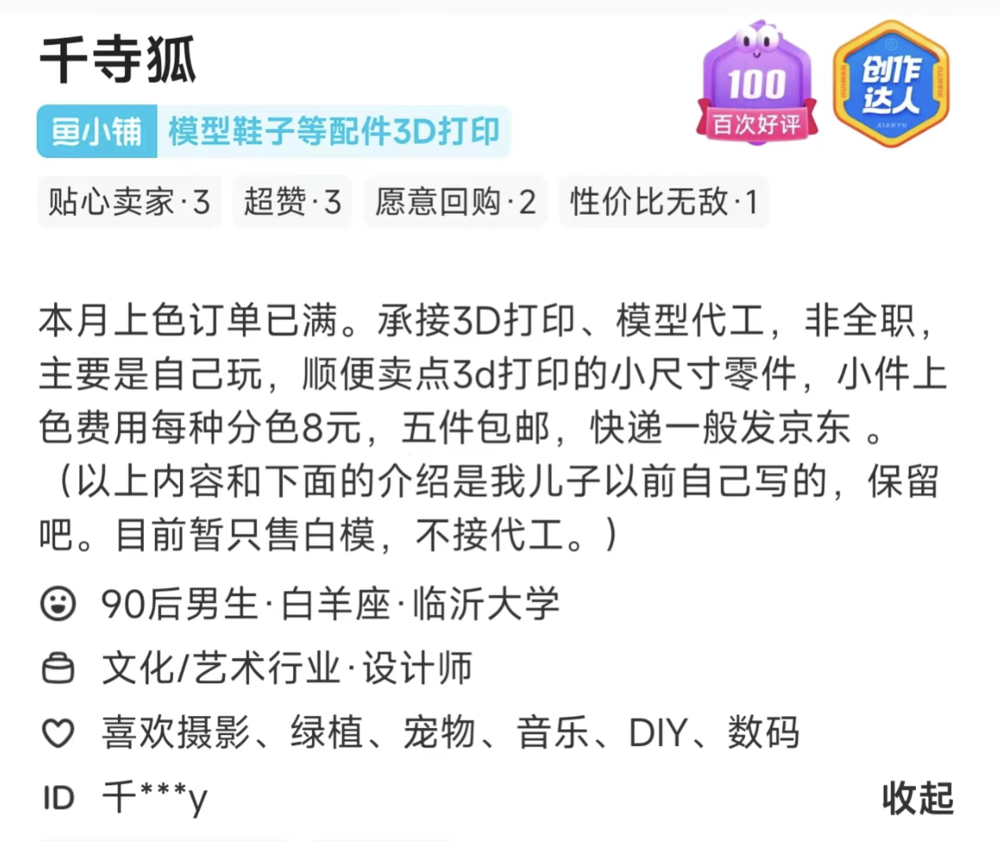
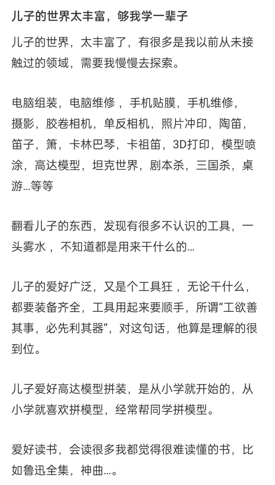

人间真实
“枪响了”
“你看到是谁开的枪吗”
“我看不清，他站在道德制高点上，他在阳光下”
卡夫卡松饼君
卡夫卡松饼君是我在b站偶然关注的一个up主，她患病的时候应该是24岁 肺癌晚期
2020年1月在b站发布第一个视频 当我知道自己是肺癌晚期的时候，我在想什么-第一期，视频上百万播放，镜头前的她开朗自信，积极向上，言语中没有一点消极的态度，但谁也没有想到正是因为这个“原因”让她后续遭遇了无休止的网暴，”哪有人患了癌症还这个状态？”、”财富密码！”，各种质疑接踵而至，劈头盖脸的谩骂让旁观者都喘不过气来，仅仅是因为她乐观的抗癌态度导致了自己被无端质疑和指责，在自己患病的最后时间也没能安静的走完最后一段路，在自己最需要支持的时候还要独自面对网爆者的口诛笔伐，自己请医生朋友来自证，拿出自己的检验报告，但是这些努力的举动和潮水般的指责相比简直就是杯水车薪，没能掀起一点波澜。
2020年12月10日卡夫卡松饼君在美国波士顿某医院去世，带着世人的指责和谩骂离去了。
然而去世之后她的视频弹幕充满了道歉的声音，但他们应该只是为了让自己心里舒服一点，毕竟 已经没用了，松饼君的大脑已经永远定格在被人们“千夫所指”的状态下离去了。
纪念积极向上的松饼君
纪念永不言败的松饼君
纪念横眉冷对千夫指的松饼君！
千寺狐
上帝不是万能的，所以他创造了母亲。
千寺狐是一位普通的闲鱼二手交易平台用户，他平时会在闲鱼上出售自己制作的一些精美游戏周边，自己通过3D打印机打印出来，然后再小心翼翼的上色，精湛的手法让我一个路人都叹为观止，但是他的闲鱼动态停止在五月份的一条记录：“5月的上色订单已满，不再接受新的喷涂订单”，之后杳无音讯。
千寺狐得的病叫做“进行性肌营养不良症”，是一种罕见病，大概1/3500的概率会出现，他替另外3499个小生命承受了，这个病在他小时候5岁的时候被诊断了出来了，当时医生对他的预期寿命是大概16-18岁，也就是说当时5岁的千寺狐已经开始了自己十年的死亡倒计时。

这十年来千寺狐的母亲一直在等，她对十年后的医学发展抱有幻想，期待着能有所突破，这也是她唯一的依靠，但她又那么的无依无靠，我无法想到这样一个母亲如何度过每一天，我觉得任何时间的感觉对她来说都应该是一种折磨，我们每天在手机上看很多遍的日历是不是对她来说都是那么的碍眼，但是该来的还是会来。
在千寺狐走后，她的妈妈看着他曾经工作过的小桌子，慢慢的都是各种零件和3D打印机器，她不想丢弃这些东西，于是开始尝试了解儿子的爱好，努力的去学习儿子曾经留在这个世界上的一些东西。
